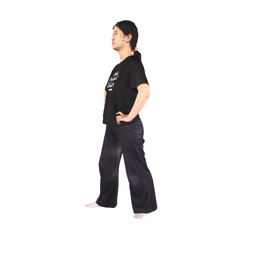
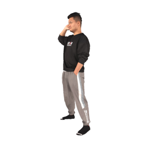
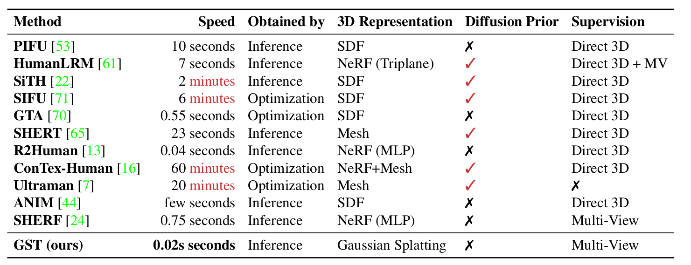
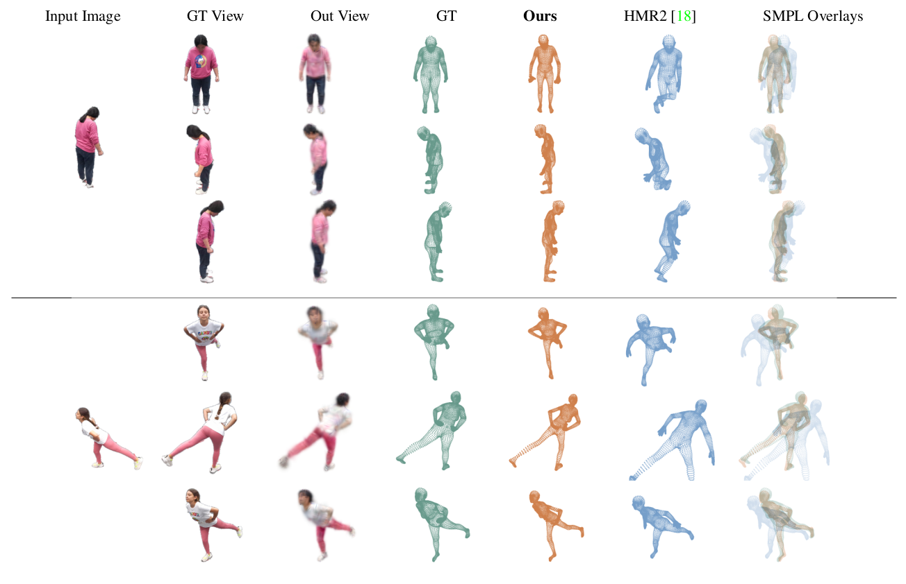
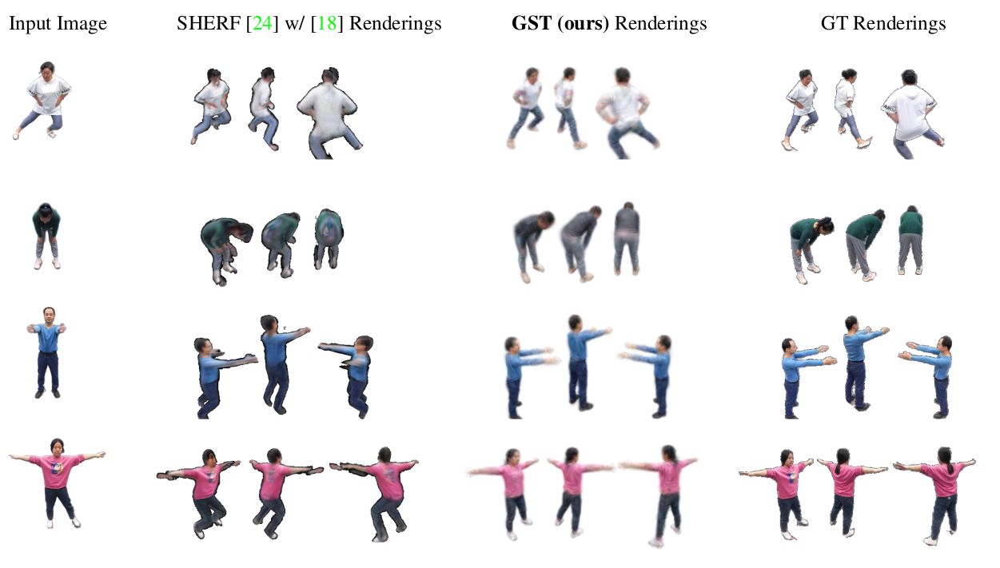

Predicting 3D SMPL Parameters and 3D Gaussian Splats from a Single Image
Input Out SMPL Out 3DGS Input Out SMPL Out 3DGS




Video
Comparisons (Speed)

Comparisons (to 3D Pose Methods)

Comparisons (to Human Novel Views Methods)

BibTeX
@InProceedings{gst_2024,
}